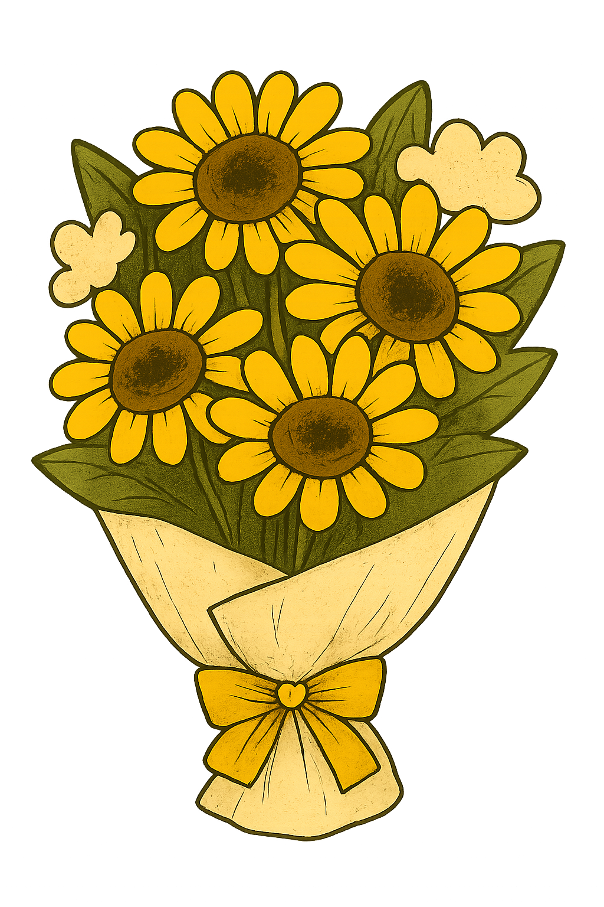

Te amo con todo mi corazón mi vida, te amoooo, espero me disculpes por todos los problemas que pasaron últimamente, pero quiero que sepas que a pesar de todo acá este niñito Marcelo, te ama con todo su corazoncito, te amooo preciosa 💗

Ábreme
Mi amor, eres lo más hermoso que me ha pasado en la vida. 💖